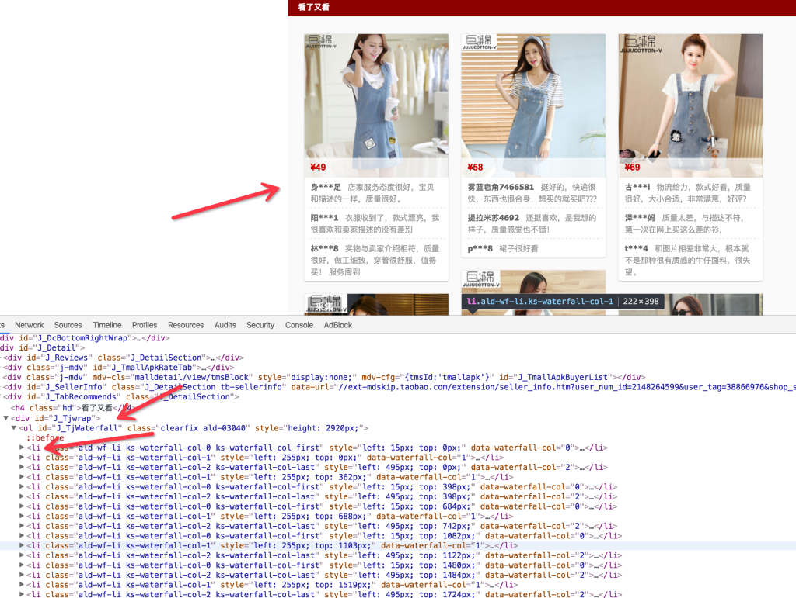
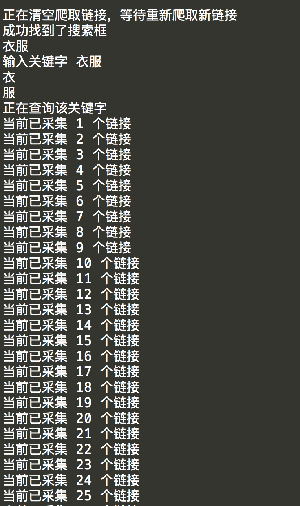

Python爬虫实战八之利用Selenium抓取淘宝匿名旺旺
更新
其实本文的初衷是为了获取淘宝的非匿名旺旺，在淘宝详情页的最下方有相关评论，含有非匿名旺旺号，快一年了淘宝都没有修复这个。
可就在今天，淘宝把所有的账号设置成了匿名显示，SO，获取非匿名旺旺号已经不可能了。那本节就带大家抓取匿名旺旺号熟悉一下Selenium吧。
2016/7/1
前言
嗯，淘宝，它一直是个难搞的家伙。
而且买家在买宝贝的时候大多数都是匿名评论的，大家都知道非匿名评论是非常有用的，比如对于大数据分析，分析某个宝贝的购买用户星级状况等等。
现在已经不能获取非匿名了，此句已没有意义了。
对于抓淘宝，相信尝试过的童鞋都能体会到抓取它到艰辛，最简单的方法莫过于模拟浏览器了，本节我们就讲解一下利用 Selenium 抓取淘宝评论的方法。
项目提供了如下功能：
- 输入淘宝关键字采集淘宝链接并写入到文件
- 从文件读取链接，执行评论采集
- 将评论和旺旺号保存到Excel中
- 记录当前采集链接索引，保存进度
准备工作
在开始本节之前
你需要了解一些基础知识，我们需要用到 Selenium 这个东西，详情请看
我们首先讲解一下你需要做怎样的配置。
首先你需要安装 Python，版本是2.7
然后需要安装的 Python 类库。
pip install pyquery selenium twisted requests xlrd xlwt xlutils
安装浏览器 Chrome，安装浏览器 Chrome，安装浏览器Chrome。
然后下载ChromeDriver，ChromeDriver是驱动浏览器的工具，需要把它配置到环境变量里。
有的童鞋说，为什么不用 PhantomJS，因为为了防止淘宝禁掉我们，需要登录淘宝账号，登录过程可能会出现奇奇怪怪得验证码，滚动条，手机验证，如果用 PhantomJS 的话不方便操作，所以在这里我们就使用 Chrome 了。
上面是 ChromeDriver 的下载地址，谷歌都上得了，这个不在话下吧，这是最官方的版本，其他链接请自行搜索。
找到对应平台的 ChromeDriver，解压后将可执行文件配置到环境变量里，配置到环境变量里，配置到环境变量里！重要的话说三遍。
流程简述
首先我们拿一个例子来演示一下全过程。
随意打开天猫一个链接
我们首先观察一下评论，可以发现所有的评论都是匿名的。即使这个用户不是匿名评论的，那也会显示匿名，淘宝这保密做的挺好。

心机的淘宝啊，那我们如果想获取一些旺旺号该咋办？
接下来我们返回宝贝详情页面，然后一直下拉下拉，拉到最最后，可以看到有个“看了又看”板块。
有没有！！发现了新大陆，这是什么？这是此宝贝相关宝贝以及它的一些评论。
看到了有非匿名用户了，哈哈哈，淘宝加密了评论，推荐部分却没有加密。
嗯，就从这里，我们把它们的旺旺号都抓下来，顺便把评论和购买的宝贝抓下来。
现在已经全部改成了匿名，上述话已经无意义了。
那么抓取完之后，保存到哪里呢？为了便于管理和统计，在这里保存到 Excel 中，那么就需要用到 xlrd, xlwt, xlutils 等库。
嗯，动机就是这样。
实战爬取
抓取过程
首先我们观察这个链接，在最初的时候，其实网页并没有加载最下方的“看了又看”内容的，慢慢往下滑动网页，滑到最下方之后，才发现看了又看页面才慢慢加载出来。
很明显，这个地方使用了Ajax，由于我们用的是 Selenium，所以这里我们不能直接来模拟 Ajax 的 Request，需要我们来模拟真实的用户操作。
所以我们要模拟的就是，在网页部分加载出来之后，模拟浏览器滑动到下方，使“看了又看”内容显示出来，然后获取网页源代码，解析之即可。
那么在这里就出现了两个至关重要的点，一个是判断网页框架大体加载出来，另一个是模拟滑动直到最下方的内容加载出来。
首先，我们解决第一个问题，怎样判断网页框架大体加载出来。我们可以用网页中的某个元素的出现与否来判断。
比如

这一部分是否加载出来。
审查一下代码，ID叫做 J_TabBarBox，好，那就用它来作为网页初步加载成功的标志。
在 Selenium 中，我们用显式等待的方法来判断该元素是否已经加载成功。
try:
driver.get(url)
WebDriverWait(driver, timeout).until(
EC.presence_of_element_located((By.ID, "J_TabBarBox"))
)
except TimeoutException:
return False
if is_recommends_appear(driver, max_scroll_time):
print u'已经成功加载出下方橱窗推荐宝贝信息'
return driver.page_source
接下来我们需要模拟下拉浏览器，不妨直接下拉到底部，再从底部向上拉，可能需要下拉多次，所以在这里定义了一个下拉次数，那么判断“看了又看”正文内容是否出现依然可以用显式等待的方法。
浏览器审查元素发现它的选择器是 #J_TjWaterfall li

那么可以用如下方法来判断是否加载成功
try:
driver.find_element_by_css_selector('#J_TjWaterfall li')
except NoSuchElementException:
return False
return True
下拉过程可以用执行 JavaScript 的方法实现。
js = "window.scrollTo(0,document.body.scrollHeight-" + str(count * count* 200) + ")"
driver.execute_script(js)
其中 count 是下拉的次数，经过测试之后，每次拉动距离和 count 是平方关系比较科学，具体不再描述，当然你可以改成自己想要的数值。
嗯，加载出来之后，就可以用
driver.page_source
来获取网页源代码了
用 pyquery 解析即可。
doc = pq(html)
items = doc('#J_TjWaterfall > li')
print u'分析得到下方宝贝中的用户评论:'
for item in items.items():
url = item.find('a').attr('href')
if not url.startswith('http'):
url = 'https:' + url
comments_info = []
comments = item.find('p').items()
for comment in comments:
comment_user = comment.find('b').remove().text()
comment_content = comment.text()
anonymous_str = config.ANONYMOUS_STR
<del>if not anonymous_str in comment_user:</del> ＃此句本来用来判断是否匿名，现淘宝已修复该漏洞，只能抓取全部匿名的了
comments_info.append((comment_content, comment_user))
info.append({'url': url, 'comments_info': comments_info})
return info
然后保存到 Excel 中。
运行结果截图

可以发现，另外提供了先登陆后爬取的功能，然后保存了爬取进度。
采集链接
刚才我们测试的链接是哪里来的？我们不能一个个去找吧？所以，在这里又提供了一个采集链接的过程，将采集的链接保存到文本，然后抓取的时候从文本读取一个个链接即可。
所以在这里我们模拟搜索的过程，关键字让用户输入，将搜索的链接采集下来。
在此 Selenium 模拟了输入文字，点击按钮和翻页的功能。
核心代码如下
下面的方法模拟了加载出搜索框之后输入文字点击回车的过程，将网页的结果返回。
def get_results(keyword):
driver = config.DRIVER
link = config.SEARCH_LINK
driver.get(link)
try:
WebDriverWait(driver, config.TIMEOUT).until(
EC.presence_of_element_located((By.ID, "mq"))
)
except TimeoutException:
print u'加载页面失败'
try:
element = driver.find_element_by_css_selector('#mq')
print u'成功找到了搜索框'
keyword = keyword.decode('utf-8', 'ignore')
print keyword
print u'输入关键字', keyword
for word in keyword:
print word
element.send_keys(word)
element.send_keys(Keys.ENTER)
except NoSuchElementException:
print u'没有找到搜索框'
print u'正在查询该关键字'
try:
WebDriverWait(driver, config.TIMEOUT).until(
EC.presence_of_element_located((By.CSS_SELECTOR, "#J_ItemList div.productImg-wrap"))
)
except TimeoutException:
print u'查询失败'
html = driver.page_source
return html
下面的方法模拟了翻页的过程，到指定的翻页数目为止
def get_more_link():
print u'正在采集下一页的宝贝链接'
driver = config.DRIVER
try:
js = "window.scrollTo(0,document.body.scrollHeight)"
driver.execute_script(js)
except WebDriverException:
print u'页面下拉失败'
try:
next = driver.find_element_by_css_selector('#content b.ui-page-num > a.ui-page-next')
next.click()
except NoSuchElementException:
print u'找到了翻页按钮'
driver.implicitly_wait(5)
try:
WebDriverWait(driver, config.TIMEOUT).until(
EC.presence_of_element_located((By.CSS_SELECTOR, "#J_ItemList div.productImg-wrap"))
)
except TimeoutException:
print u'查询失败'
html = driver.page_source
parse_html(html)
运行结果截图

采集到到内容保存到 urls.txt 中

嗯，这下采集链接和爬取链接都有了。
代码放送
扯了这么多，许多童鞋已经蠢蠢欲动了，大声告诉我你们想要的是什么？
哦没错！代码！
嗯在这呢！
附加扯淡
嗯想说一句，在这里还提供了一些可配置项，比如翻页最大次数，超时时间，下拉次数，登录链接等等。
都可以在 config.py 中配置。
- URLS_FILE 保存链接单的文件
- OUT_FILE 输出文本EXCEL路径
- COUNT_TXT 计数文件
- DRIVER 浏览器驱动
- TIMEOUT 采集超时时间
- MAX_SCROLL_TIME 下拉滚动条最大次数
- NOW_URL_COUNT 当前采集到第几个链接
- LOGIN_URL 登录淘宝的链接
- SEARCH_LINK 采集淘宝链接搜索页面
- CONTENT 采集链接临时变量
- PAGE 采集淘宝链接翻页数目
- FILTER_SHOP 是否过滤相同店铺
- ANONYMOUS_STR 匿名用户标志，已失效
哦，对了，程序怎么用啊？看 README！